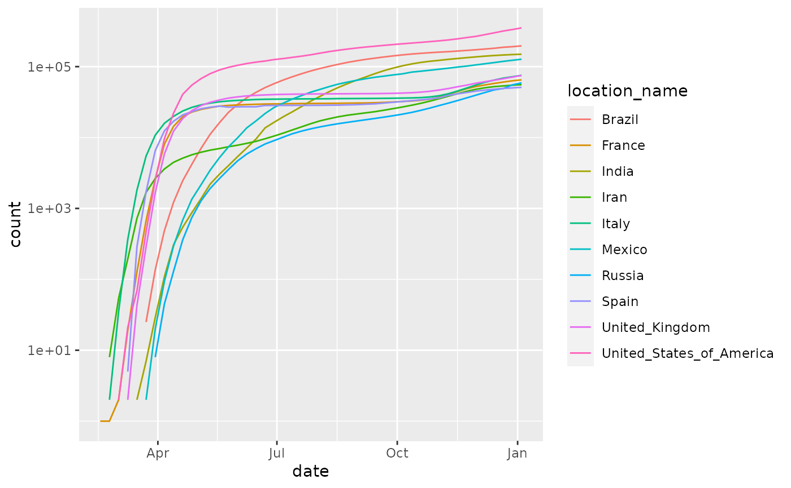

R/align_to_baseline.R
align_to_baseline.RdWhen endeavoring to compare epidemic curves (cases vs date, for example), particularly when making graphical displays, it is helpful to set a "time baseline" that aligns where all the curves start.
align_to_baseline(df, filter_criteria, date_column = "date", group_vars)
| df | data.frame that includes a date column and at least one other column for filtering, typically a case count. |
|---|---|
| filter_criteria | an expression as would normally be specified
directly to |
| date_column | character(1) column name of the column for ordering the data to define a "beginning" of the curve. It is called a "date column", but anything with a natural ordering will likely work. |
| group_vars | optional character() column_name(s) that specify
grouping done before calculating minimum |
A data.frame with a new column, index, that gives the
number of time intervals (typically days) from when the
baseline counts are first encountered, done by group.
This function takes this basic approach:
Filter all all data using the filter_criteria, expressed as a
dplyr::filter() expression.
Optionally group the dataset.
Find the minimum date left after applying the filter criteria
"Subtract" the minimum date (on a per group basis if grouping columns are used).
The result is a plot that shifts all the curves to start at the "same" starting time with respect to the "start" of the pandemic. For example, for the COVID-19 pandemic, China started much earlier than the rest of the world. To compare the time course of China versus other countries, setting the time to the point where each country had 100 cases allows direct comparison of the shapes of the countries' curves.
Other case-tracking:
beoutbreakprepared_data(),
bulk_estimate_Rt(),
combined_us_cases_data(),
coronadatascraper_data(),
covidtracker_data(),
ecdc_data(),
estimate_Rt(),
eu_data_cache_data(),
jhu_data(),
nytimes_county_data(),
owid_data(),
plot_epicurve(),
usa_facts_data()
Other plotting:
plot_epicurve(),
plot_projection()
#>head(ecdc)#> # A tibble: 6 x 8 #> # Groups: location_name [1] #> date confirmed deaths location_name iso2c iso3c population_2019 #> <date> <dbl> <dbl> <chr> <chr> <chr> <dbl> #> 1 2019-12-31 0 0 Afghanistan AF AFG 38041757 #> 2 2020-01-01 0 0 Afghanistan AF AFG 38041757 #> 3 2020-01-02 0 0 Afghanistan AF AFG 38041757 #> 4 2020-01-03 0 0 Afghanistan AF AFG 38041757 #> 5 2020-01-04 0 0 Afghanistan AF AFG 38041757 #> 6 2020-01-05 0 0 Afghanistan AF AFG 38041757 #> # … with 1 more variable: continent <chr>#> Rows: 26,982 #> Columns: 8 #> Groups: location_name [210] #> $ date <date> 2019-12-31, 2020-01-01, 2020-01-02, 2020-01-03, 2020… #> $ confirmed <dbl> 0, 0, 0, 0, 0, 0, 0, 0, 0, 0, 0, 0, 0, 0, 0, 0, 0, 0,… #> $ deaths <dbl> 0, 0, 0, 0, 0, 0, 0, 0, 0, 0, 0, 0, 0, 0, 0, 0, 0, 0,… #> $ location_name <chr> "Afghanistan", "Afghanistan", "Afghanistan", "Afghani… #> $ iso2c <chr> "AF", "AF", "AF", "AF", "AF", "AF", "AF", "AF", "AF",… #> $ iso3c <chr> "AFG", "AFG", "AFG", "AFG", "AFG", "AFG", "AFG", "AFG… #> $ population_2019 <dbl> 38041757, 38041757, 38041757, 38041757, 38041757, 380… #> $ continent <chr> "Asia", "Asia", "Asia", "Asia", "Asia", "Asia", "Asia…# get top 10 countries by cumulative # number of deaths top_10 = ecdc %>% dplyr::group_by(location_name) %>% dplyr::summarize(deaths = max(deaths)) %>% dplyr::arrange(dplyr::desc(deaths)) %>% head(10)#>top_10#> # A tibble: 10 x 2 #> location_name deaths #> <chr> <dbl> #> 1 United_States_of_America 127410 #> 2 Brazil 59594 #> 3 United_Kingdom 43730 #> 4 Italy 34767 #> 5 France 29843 #> 6 Spain 28752 #> 7 Mexico 27769 #> 8 India 17400 #> 9 Iran 10817 #> 10 Belgium 9754# limit ecdc data to "deaths" and # top 10 countries ecdc_top10 = ecdc %>% dplyr::filter(location_name %in% top_10[['location_name']]) plot_epicurve(ecdc_top10, color='location_name', case_column='deaths')ecdc_top10_baseline = align_to_baseline(ecdc_top10, deaths>100, group_vars='location_name') plot_epicurve(ecdc_top10_baseline, date_column='index', color='location_name') + ggtitle('Deaths over time, aligned to date of 100 deaths per country')#> Error: